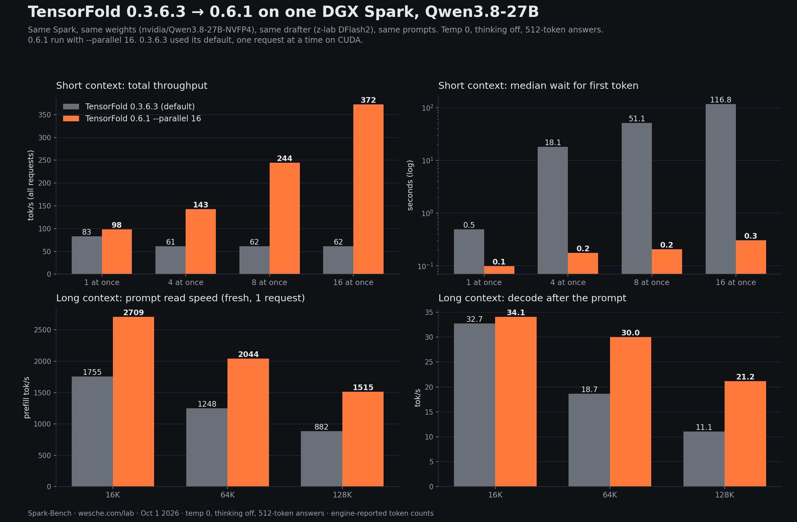
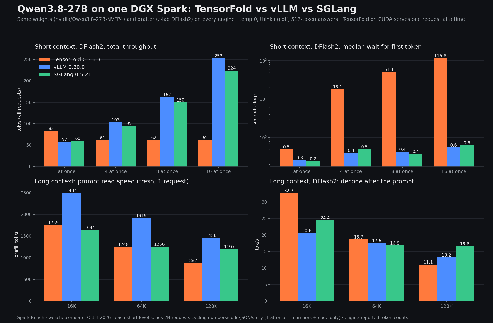

Qwen3.8-27B on one Spark: TensorFold vs vLLM vs SGLang
One Spark, one checkpoint (nvidia/Qwen3.8-27B-NVFP4), one DFlash2 drafter, three engines. TensorFold 0.6.1 with --parallel 16 took the crowd row from 62 to 372 tok/s over 0.3.6.3, and it is the only engine that gave byte-identical replies alone, under load and with or without the drafter.

All four, same harness
| TensorFold 0.3.6.3 (default) | TensorFold 0.6.1 --parallel 16 | vLLM 0.30.0 | SGLang 0.5.21 | |
|---|---|---|---|---|
| 1 request, tok/s | 83 | 98 | 57 | 60 |
| 4 at once, combined tok/s | 61 | 143 | 103 | 95 |
| 8 at once, combined tok/s | 62 | 244 | 162 | 150 |
| 16 at once, combined tok/s | 62 | 372 | 253 | 224 |
| First token, 16 at once (median) | 116.82 s | 0.30 s | 0.55 s | 0.63 s |
| Prompt read 16K, tok/s | 1,755 | 2,709 | 2,494 | 1,644 |
| Prompt read 64K, tok/s | 1,248 | 2,044 | 1,919 | 1,256 |
| Prompt read 128K, tok/s | 882 | 1,515 | 1,456 | 1,197 |
| Decode after 128K prompt, tok/s | 11.1 | 21.2 | 13.2 | 16.6 |
| Same 64K prompt again, first token | 0.45 s | 0.40 s | 1.29 s | 0.59 s |
| Same request twice / solo = 16 at once / drafted = plain | — | 8/8 · 8/8 · 8/8 | 8/8 · 1/8 · 1/8 | 7/8 · 1/8 · 1/8 |
Thinking off, temperature 0, 512-token answers, DFlash2 drafter on every engine. Exactness counts byte-identical replies out of 8 prompts (numbers, code, JSON, prose, explanation, SQL, email, math); TensorFold 0.3.6.3 was not part of the exactness round.

The original chart, kept for the record: it compared vLLM and SGLang against TensorFold 0.3.6.3. The correction above reran TensorFold on 0.6.1 with --parallel 16 on the same Spark, weights, drafter and prompts.
The setup, the caveats, the limits.
Hardware: one DGX Spark. Model nvidia/Qwen3.8-27B-NVFP4, drafter z-lab/Qwen3.8-27B-DFlash2 with 7 speculative tokens on all engines. Engines: TensorFold 0.3.6.3 (default) and 0.6.1 @ 17c73e1 with --parallel 16, vllm/vllm-openai:v0.30.0, lmsysorg/sglang:v0.5.21-cu130.
Why vLLM and SGLang change under load: batched kernels pick different reduction orders as the batch changes, so the same request can diverge after a few dozen tokens. Both still repeated themselves run to run when alone (vLLM 8/8, SGLang 7/8).